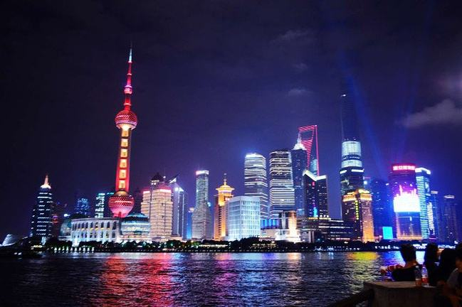

The Oriental Pearl Radio Television Tower is a TV tower in Shanghai. Its location at the tip of Lujiazui in the Pudong New Area by the side of Huangpu River, opposite The Bund, makes it a distinct landmark in the area. Its principal designers were Jiang Huan Chen, Lin Benlin, and Zhang Xiulin. Construction began in 1991, and the tower was completed in 1994.
· home.